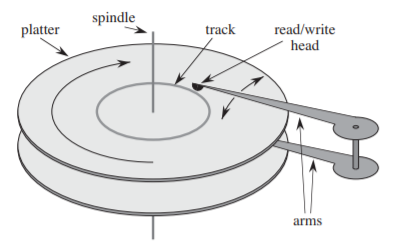
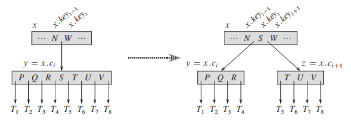

5.B-tree
1. B 树及其性质
(1). 辅存的结构

计算机系统的主存通常由硅芯片构成，辅存基于磁盘。右图为一个典型的磁盘驱动器，它由一个或多个盘片构成 (
为平摊机械运动所花费的时间，磁盘一次会存取多个页面 (
考虑需要在磁盘上持久化存储大量的 $(\mathit{key,\ value})$ 的场景，此时需要一个合适的数据结构保证效率。如果使用
- 开销大、扩展性差：为了保持哈希表的效率需要更大的数组，接近填满后还需要转移数据至更大的哈希表
- 不支持有序遍历、范围查询
- 如果桶中的元素过多对磁盘
IO (机械运动的开销) 不友好
(2). B 树的定义
一棵
- 每个结点 $x$ 具有以下属性
- $x.n$ : 存储在结点 $x$ 中的关键字个数
- $\mathit{x.key_1,\ ...\ ,x.key_n}$ : 关键字本身，以非降序存放，即 $\mathit{x.key_1\leq\ ...\ \leq x.key_n}$。并且，内结点的关键字对应的数据也存储在内结点中
- $\mathit{x.leaf}$ : 布尔值，表示 $x$ 是否为叶结点
- 每个内部节点 $x$ 包含 $n+1$ 个指向子结点的指针，且 $\mathit{x.key_i}$ 对各子树的关键字范围加以分割，即 $k_1\leq\mathit{x.key_1}\leq k_2\leq \mathit{x.key_2}\ ...$
- 每个叶结点具有相同深度，即树的高度 $h$
- 每棵
B 树具有一个最小度数 $t$ 1 - 除了根结点外每个结点至少有 $t-1$ 个关键字，相应地，内部节点至少有 $t$ 个孩子
- 每个结点最多有 $2t-1$ 个关键字，相应地，内部节点至多有 $2t$ 个孩子
(3). B 树的高度
以根结点为深度
2. B 树的操作
在
- 根结点始终固定在主存中，即无需对根做
DISK-READ 操作，但修改根结点需要一次DISK-WRITE - 任何被当做参数的结点在被传递之前，都要做一次
DISK-READ
(1). 搜索
B-TREE-SEARCH(x, k)
i = 1
while i ≤ x.n and k > x.keyi
i = i + 1
if i ≤ x.n and k == x.keyi
return (x, i)
else if x.leaf
return NIL
else DISK-READ(x, ci)
return B-TREE-SEARCH(x, ci, k)
访问磁盘页面数为 $O(h)=O(\log_t n)$，花费时间 $O(tn)$
(2). 分裂结点
过程
$x.c_i$ 根据中间关键字分裂成两个结点，其中间关键字上移到 $x$ 的相应位置。
- 根结点分裂是增加树高的唯一途径。

(3). 插入
沿着插入路径找到目标叶子结点后，通过分裂结点保证关键字的数量不会超过限制。具体可有以下两种实现方式：
- 遇到满结点时再分裂：插入到目标位置后，如果发生分裂，其父结点会增加一个 $key$，因此递归向上判断
- 沿途分裂满结点：为了避免向上回溯，需要保证找到目标结点时，它的父结点未满。因此，在沿插入路径向下的过程中，只要遇到一个满结点就分裂它，这样保证了每个当前结点的父结点都一定未满
(4). 借位与合并
考虑从结点 $x$ 处删除了一个 $\it key$，导致 $x.n=t-2$，有两种方法维护 $x.n\geq t$
- 借位：从左兄弟 $x_l$ 或右兄弟 $x_r$ 借来一个关键字，要求 $x_{\mathit{brother}}.n\geq t$
- $x_l$ 最右关键字上移，$k_x$ 下移至 $x$ 最左处，同时 $x_l$ 的最右指针成为 $x$ 的最左指针
- $x_r$ 最左关键字上移，$k_x$ 下移至 $x$ 最右处，同时 $x_l$ 的最左指针成为 $x$ 的最右指针
- 合并：把 $x_{bro}$、$x$ 以及 $k_x$ 合并，指针不会发生改变，要求 $x_{\mathit{brother}}.n\leq t$
- $x_{\mathit{brother}}.n + t - 2 + 1\leq 2t-1$
- 合并会导致 $x._\mathit{parent}$ 减少一个 $\it key$
(5). 删除
直到删除导致 $n< t-1$ 再做处理，并不断向上回溯判断：
- 如果待删关键字 $k$ 在非叶结点 $x$ 中，则向左/右找到 $k$ 的前驱/后继，用之代替 $k$，然后递归删除这个前驱/后继
- 如果待删关键字 $k$ 在叶结点 $x$ 中，从 $x$ 中删除 $k$ 2
- 若删除后导致 $n< t-1$，且某个相邻兄弟至少包含 $t$ 个关键字，借位
- 否则，合并，并递归向上判断
和插入操作类似，如果要避免回溯，就要在删除路径上沿途处理达到下界的结点
- 沿路径下移前判断该子结点是否 $x.c_i.n=t-1$，若是则进行如下变换
- 若删除后导致 $n< t-1$，且某个相邻兄弟至少包含 $t$ 个关键字，借位
- 否则，合并
- 如果待删关键字 $k$ 在非叶结点 $x$ 中，递归删除前驱/后继之后，还需要额外：
- 如果 $k$ 的左右孩子都只有 $t-1$ 个关键字，则将这两个孩子与 $k$ 合并作为新的左孩子，然后在新的孩子中递归删除 $k$
- 如果待删关键字 $k$ 在叶结点 $x$ 中，直接从 $x$ 中删除 $k$
3. B+ 树
(1). B+ 树的定义
- 内结点只储存索引，叶结点存储索引和数据，且叶结点构成一张有序链表
- 由于内结点只存储索引，其数量可以提升；若一个结点对应磁盘的一页，
B + 树的高度更小 B + 树每个索引的查询效率相同，而B 树与之相比不够稳定
(2). 插入、删除
- 插入：叶结点分裂时，将上移的关键字保存在子结点中，其他结点分裂过程相同
- 通常上移的关键字对应的条目存放在右孩子中，实现左闭右开
- 删除：叶结点借位时，直接借来兄弟的记录，并修改 $k_i$；叶结点合并时，直接删除父结点的 $k_i$，然后两个兄弟间合并